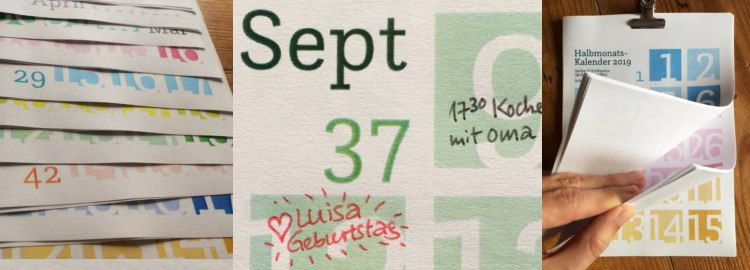

Auf dieser Website ist Platz für das, wofür mein Twitterprofil @charakterziffer nicht ausreicht. Mein Blog ist als Plus zu meinen Tweets gedacht, eben „@cz+“. // Die letzten drei Artikel:
Der allererste Artikel in diesem Blog drehte sich um meine damalige Pause von Twitter. Gut acht Jahre ist das nun her. Heute steht ein kleines Jubiläum an, denn das hier ist mein … einhundertster Blogeintrag! 🎉 🥂 Ich feiere dies mit einem Rückblick auf frühere Artikel, die ich besonders lesenswert finde – so wie ich es in meinem Blogeintrag Nº 50 gemacht habe.
Übers Lesen und Erzählen
Ein Buch hat mich dazu angeregt, mir gedanken zur kleinschreibung zu machen. Ist der Verzicht auf Großbuchstaben nicht konsequent? Verlieren wir dadurch Ausdrucksmöglichkeiten? Und wie ist das mit der Lesbarkeit?
Dieses Jahr habe ich tatsächlich „Ulysses“ von James Joyce gelesen, das als schwierige Lektüre gilt. Weil ich aber abwechselnd und mit Bleistift lesen konnte, nämlich mit einer Lesepartnerin und mit schriftlichen Kommentaren im Buch, blieb ich motiviert.
Eine kürzere Lektüre handelt von einer überwältigend schönen Prinzessin, die einfach keinen Mann findet – sie hat nämlich ein sehr lachhaftes Problem. Ob die Mandelprinzessin in meinem Märchen am Ende doch noch glücklich wird?
Oder wie wäre es mit Geschichten fürs Ohr? Jede Woche laufen im Radio über fünfzig Hörspiele ganz unterschiedlicher Art. – Wer weniger auf Fiktionales steht, der nutzt vielleicht Podcasts als Informationsquelle. Ein paar empfehlenswerte Serien zähle ich in meinem Artikel auf.
Typografie und Buchstaben
Einige Designer sind stolz darauf, Websites in der Systemschrift des Nutzer darzustellen. Ich finde, mit einer Schriftwahl nach System wird gute Gestaltung eher verhindert. – Wer dann lieber Webfonts einsetzt, sollte die richtigen Schriftschnitte einbinden. Sonst wird der Normalschnitt nämlich verfettet und schräggestellt.
Ein längerer Text sollte durch Überschriften und Unterüberschriften gegliedert werden. Doch nicht nur die Größe zählt, um diese Titel hierarchisch zu gestalten. Schließlich bietet die typografische Palette viel mehr Möglichkeiten.
Viele Varianten von Schrift habe ich auch auf einer Typosafari durch Regensburg gefunden. Eigentlich wollte ich ja herausfinden, welche Schriftarten meine Stadt ausmachen. Spoiler: Eine eindeutige Antwort habe ich nicht gefunden.
Natürlich gestalte ich selbst mit Schrift. Als Beispiele stelle ich vier Plakate fürs Chorkonzert vor und erläutere, welche Gedanken zur Gestaltung ich mir jeweils gemacht habe.
Und sonst?
Mein Blog hat zwar ein, zwei inhaltliche Schwerpunkte, ist aber offen für alle möglichen Themen – so wie meine Interessen breit gefächert sind. An der japanischen Papierfaltkunst Origami mag ich zum Beispiel, dass viele Figuren sehr reduziert sind. Trotzdem ist ein gefalteter Stier gut erkennbar.
Damit E-Mails vertraulich bleiben, sollte man sie verschlüsseln. Leider hat sich das immer noch nicht durchgesetzt, obwohl verschlüsselte Mails gar nicht so schwer umzusetzen sind.
Vielleicht ist das wie mit allem, das man sich vornimmt … wie man gute Vorsätze besser durchhält? Konkret formulieren, dokumentieren, darüber plaudern und sich belohnen. So hat’s bei mir dann auch bis zu diesem 100. Blogartikel gereicht. Alle anderen, hier nicht genannten Texte stehen übrigens im Archiv.
Fast jedes Jahr biete ich meinen Halbmonatskalender hier zum Download an. Das Design habe ich 2012 entwickelt, weil ich es so sonst nirgendwo gefunden habe. Es ist ungewohnt und anfangs dauert es ein wenig, bis man sich orientiert hat, welches Kästchen für welchen Wochentag steht.

Die Vorteile liegen für mich aber auf der Hand:
große Zahlen, die sich gut lesen lassen, obwohl der Kalender drüben an der Wand hängt.
kompakt im Format DIN A5, braucht nicht den Platz eines riesigen Posters.
2–3 Wochen im Überblick, um einige Tage voraus- und zurückzuschauen.
Platz zum Reinschreiben, nämlich rund 8 cm² für kurze tägliche Notizen.
frisches Konzept und nicht die 08/15-Vorlage in der abgenutzten Allerweltschrift Helvetica/Arial.
Die Schrift meines Kalenders ist dieses Jahr übrigens Questa Slab, aus dem Questa Project von Martin Majoor und Jos Buivenga.
Zur Abwechslung habe ich die Monate mal unterschiedlich eingefärbt. Wer es monochrom mag, kann auch die Schwarz-Weiß-Version herunterladen (PDF, 200 kB). Dann auf zwölf A4-Seiten ausdrucken, auf Wunsch jedes Blatt halbieren, sortieren und die Einzelblätter zusammenheften – mit Vielzweckklammer, im Copy-Shop spiralbinden lassen, obere Kante leicht leimen oder einfach jede Seite mittig lochen und aufhängen.
Über Weiterempfehlungen meines Kalender freue ich mich sehr. Dazu steht er unter einer Creative-Commons-Lizenz mit Namensnennung, nicht kommerzieller Nutzung und Weitergabe unter gleichen Bedingungen (CC BY-NC-SA). Wer den Kalender bearbeiten möchte (beispielsweise die optionalen Feiertage aufs eigene Bundesland anpassen), möge mich bitte kurz anschreiben oder hier kommentieren. Dann verschicke ich gerne die SVG-Dateien.
Science-Fiction-Geschichten sind oftmals gar nicht so weit von unserer Wirklichkeit entfernt. Nur ein kleines, entscheidendes Detail ist anders, das dann aber gehörige Folgen nach sich zieht. Zum Beispiel gelten im Film Equilibrium Gefühle als etwas Gefährliches, das verboten werden muss. Minority Report spielt die Idee durch, dass man Verbrechen vorhersehen könnte. Und in Blade Runner sind Roboter so menschenähnlich, dass sich die Frage nach ihren Rechten stellt. Eine kleine Veränderung hinterfragt die ganze Gesellschaft.
Ganz so weitreichend sind die Auswirkungen nicht, die meine Erfundenen Fakten hätten, wenn sie wahr wären. Aber vielleicht eröffnen auch sie einen kleinen Blick in eine Welt, in der Gewohntes ganz anders wäre.
🌹 Erfundenes Faktum № 81: Bis ins späte Mittelalter signalisierte man mit roten Rosen den Edelfrauen, für wie zickig (dornig) man sie hielt. (#)
🜛 Erfundenes Faktum № 82: Krötenschleim kann in einem Zaubertrank durch Agar-Agar ersetzt werden, ohne die Wirkung zu beeinträchtigen. (#)
🥨 Erfundenes Faktum № 83: Wegen ihrer Form fördert der Verzehr von Brezeln die Intelligenz und das räumliche Vorstellungsvermögen. (#)
🤡 Erfundenes Faktum № 84: Damit man es besser von Record (⏺) unterscheiden kann, wurde 1973 beim Symbol „Pausenclown“ die rote Nase entfernt – nur die vereinfachten Augen blieben übrig (⏸). (#)
🐝 Erfundenes Faktum № 85: Bienen fliegen deswegen so oft ins menschliche Gesicht, weil UV-Licht-reflektierende Augen wie Blumen wirken. (#)
🦇 Erfundenes Faktum № 86: Man kann die Wahrnehmung von Geisterwesen sehr leicht trainieren, indem man längere Zeit seine Brille nicht putzt. (#)
◎ Erfundenes Faktum № 87: Bei über 34,7 °C streckt sich der menschliche Augapfel weit genug, um 0,25 Dioptrin Weitsichtigkeit auszugleichen. (#)
⍯ Erfundenes Faktum № 88: Die Hintergründe eines Ereignisses sind umso wahrhaftiger, je besser sie ins eigene Weltbild passen. (#)
🍎 Erfundenes Faktum № 89: Wer unter einem Apfelbaum steht, verstärkt an dieser Stelle die Erdanziehung und erhöht somit die Wahrscheinlichkeit, dass ihm ein Apfel auf den Kopf fällt. (#)
∥ Erfundenes Faktum № 90: Die meisten Science-Fiction-Geschichten beruhen auf Ideen, die aus Parallel-Universen übermittelt wurden. (#)
Diese Twitterserie gibt es übrigens schon seit Dezember 2010. Als Blogeintrag gebündelt habe ich die Folgen 1–16, 17–28, 29–40, 41–50, 51–60, 61–70, 71–80 und 81–90.
Das Wort kombiniert Persönlichkeit (Charakter) mit Sachlichem (Ziffer). Zusammengesetzt ergibt sich ein Synonym für Mediävalziffer, eine Zahlenvariante mit Ober- und Unterlängen.
Schriftarten dieses Blogs
Wenn dein Browser eingebettete Schriften (WOFF/WOFF2) unterstützt, dann liest du die Fließtexte hier in der Source Sans Pro von Paul D. Hunt, erschienen 2012 bei Adobe.
Die Überschriften sind aus der czSlab gesetzt, die ich für dieses Blog gestaltet habe. Sie orientiert sich an Yanones viel ausgefeilterer Antithesis von 2014.
§ 1 Externe Links · Dieses Blog verlinkt auf Websites Dritter. Zum Zeitpunkt der erstmaligen Verlinkung waren dort keine Rechtsverstöße ersichtlich. Da ich keinen Einfluss auf fremde Websites habe, kann ich für deren Inhalte und Gestaltung keine Haftung übernehmen. Sollte ich von Rechtsverstößen erfahren, entferne ich die Verlinkung unverzüglich. Eine ständige Kontrolle der externen Links ist ohne konkrete Hinweise aber nicht zumutbar.
§ 2 Datenschutzerklärung · Mir ist der Schutz deiner Daten sehr wichtig. Deshalb verzichte ich auf Cookies, vermeide möglichst Dienste von Drittanbietern und erhebe so wenige Daten wie es geht. Diese Website kann ohne die Angabe persönlicher Daten genutzt werden.
Die einzige Ausnahme sind Kommentare. Wenn du einen meiner Texte kommentierst, bekomme ich die eingegebenen Daten und eine Zeitangabe per (prinzipiell unsicherer) E-Mail zugestellt. Falls dein Kommentar sachlich zur Diskussion beiträgt, ergänze ich ihn öffentlich sichtbar unter dem entsprechenden Artikel. Dabei sind sämtliche Angaben freiwillig (Name, Website, Mailadresse, Kommentar) – auch anonyme Kommentare sind möglich.
§ 3 Widerspruch gegen Direktwerbung · Die Verwendung meiner Kontaktdaten zur gewerblichen Werbung ist ausdrücklich nicht erwünscht; ich widerspreche hiermit jeder kommerziellen Nutzung und Weitergabe meiner Daten (gemäß § 21 DSGVO). // Über private Fanpost freue ich mich allerdings sehr und antworte darauf mit großem Vergnügen!
 @charak
@charak